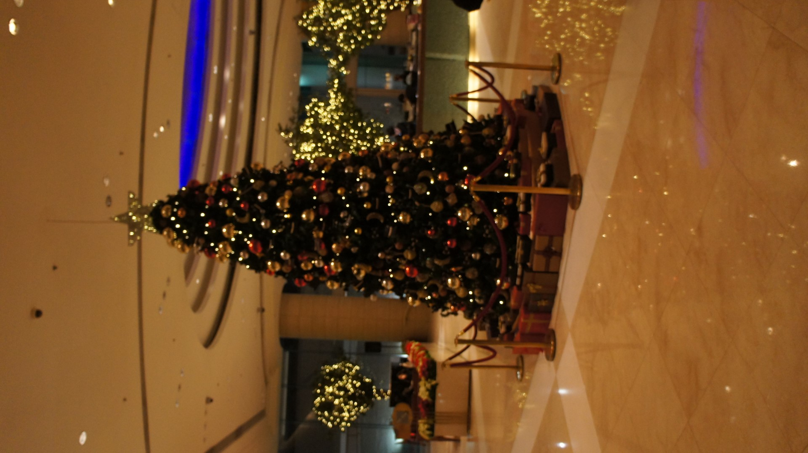

Harbour Plaza Metropolis, Hong Kong
 After arriving by a private car to the hotel, I entered my room on the 19th floor. None of my friends were working this week, but the staff were still nice. And it’s Christmas too (I checked in on December 30), so it was nice to see a tree.
 This year’s theme seems to be more “Broadway” and it reflected everywhere in the lobby.
This year’s theme seems to be more “Broadway” and it reflected everywhere in the lobby.
There were two beds that were on the small size. Travelling solo, two beds is nice (which is what I usually get). Sometimes the two beds are combined into one. It’s a “Queen” bed but you can tell it’s two “Twin” beds.
There is also a desk and a chair. It’s good enough for me. However, you’ll need an adaptor as these are U.K. plugs, unless you’re willing to pay for the adaptor HPME provides. I usually bring one since I travel to Hong Kong a lot.
There’s a fridge (read: minibar), a boilers, as well as a closet and safe inside the closet.
 There was a view here. But there’s buildings that were built a year or two ago. So, now the views
are gone. There’re views on the other side though, and I wasn’t here for these views. So, no biggie for
me, but something to watch out for (in all honesty, you’ll probably be running around the city).
There was a view here. But there’s buildings that were built a year or two ago. So, now the views
are gone. There’re views on the other side though, and I wasn’t here for these views. So, no biggie for
me, but something to watch out for (in all honesty, you’ll probably be running around the city).
There is also a pool, a fitness center, as well as a spa on the 9th floor, but I didn’t visit them, so I only got this bad picture at night.
Of course, people usually eat before the day starts, so of course I had to as well. It’s at “The Promenade” and it’s a nice place for breakfast. I think they also serve dinner there but there’s a lot of nice places there that serves local food (Tao Heung is one of them, and it’s the one in the main store).
 The “Broadway” theme is also shown in “The Promenade” as the entrance to the main sitting area.
The “Broadway” theme is also shown in “The Promenade” as the entrance to the main sitting area.
 There’s ample seating.
There’s ample seating.


 Of course, the foods are nice. It’s a large buffet spread.
Of course, the foods are nice. It’s a large buffet spread.
 Ask for a seat near the window. They will gladly seat you there and someone follows behind with tea or coffee
(you can decline, they’ll flip the cup so they know which cups not to fill). They’ll also move the napkin in
the center to the breadplate so they know which tables are seated.
Ask for a seat near the window. They will gladly seat you there and someone follows behind with tea or coffee
(you can decline, they’ll flip the cup so they know which cups not to fill). They’ll also move the napkin in
the center to the breadplate so they know which tables are seated.
This hotel is best for convenience to the city as it’s right next to a train station to Guangzhou and Shenzhen (though you’ll take the slower train), the subway station to Tuen Muen and soon across the harbour, a bus terminus. As if that wasn’t enough, there is a shuttle bus to the train to the airport, a taxi stand at the hotel entrance, and a hotel shuttle to Nathen Road. The balance between convenience and quality is a good balance as this hotel is a nice place to stay for a decent price for the convenience.
Even though I didn't get pictures of Hung Hom Railway Station, the best exit is Exit C2 as it is mostly indoors and takes you to the backyard of the hotel. However, I wouldn't take any other exit because it takes longer to get to the hotel. Be careful where you're exiting the platforms. The escalators on the two ends of the platform (north and south) don't take you to Exit C. Just something to keep in mind when taking the subway to Hung Hom.